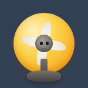
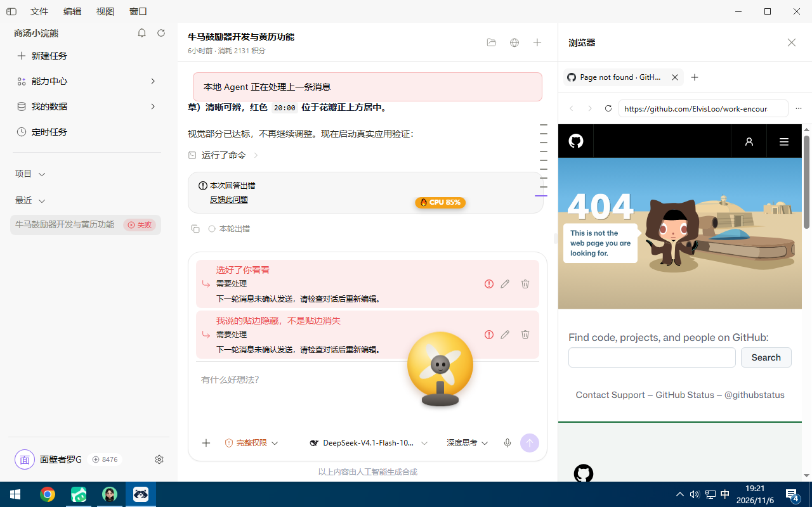
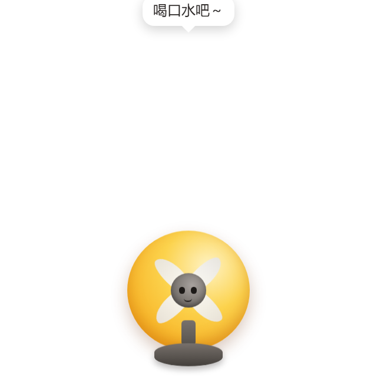
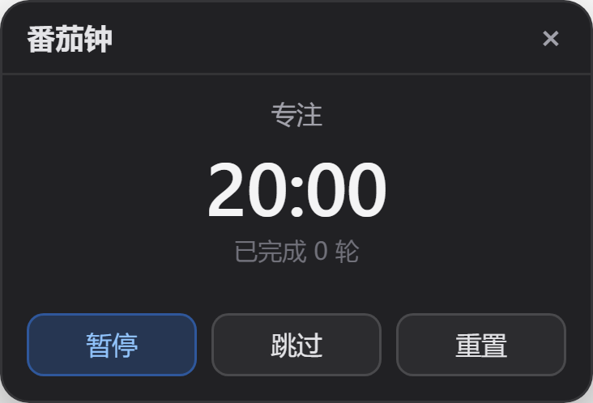
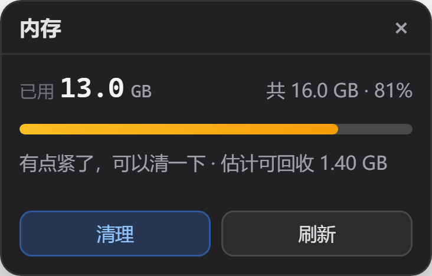
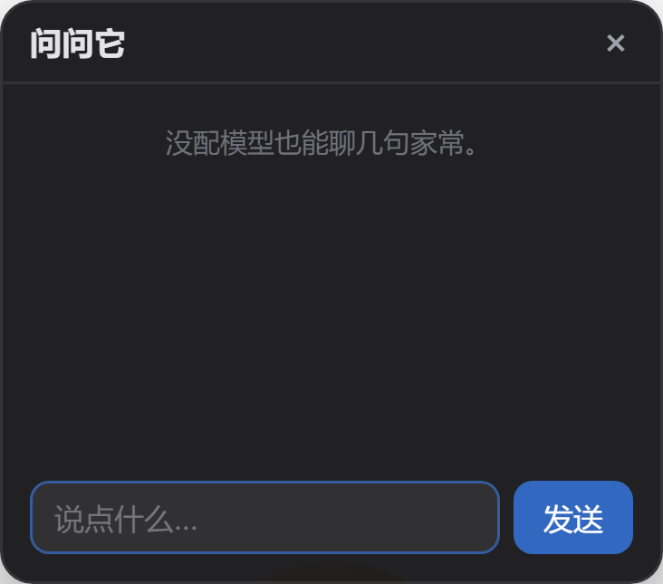

会自己走动、被摸会开心地转起来。它不只是卖萌 —— 还帮你盯番茄钟、催你喝水、 替你看 CPU 和电量，忙起来它转得快，闲下来它转得慢。

先是一只活的小风扇，再是一个有用的小工具。
待机超过 12 秒，随机挑个位置自己走过去。没人理 3 分钟就睡着、头顶冒 Z。
点一下它开心地转起来、原地跳一下；拖拽时会倾斜。待机时只是轻轻喘气，空闲 CPU 接近 0。
托盘「开始专注」25 分钟，专注中它不乱跑、不睡觉，角落显示还剩几分钟。到点跳起来提醒休息。
每 45 分钟冒个气泡催你喝水，点一下收起。专注时也提醒，休息中不叠加。
扇叶转速映射当前 CPU 负载，0.25（看得见在转但不吵）到 1.0。2 秒采样一次、平滑过渡，不会忽快忽慢。
拖到屏幕左右边缘，它会抓住边往上爬，爬一会儿自己下来。点一下也能让它下来。
检测到全屏应用（演示、游戏）时自动躲开，不打扰。窗口默认鼠标穿透，不挡你点文件。
电量低于 30%、内存或 CPU 越过 80% 时头顶冒角标。只在越线时出现，正常时完全隐藏。
自动记下今天的番茄钟、喝水、被摸次数。托盘直接看今日摘要，也能翻本月累计和连续天数。
拖到哪下次就在哪。拔掉副屏后自动回到默认位置，不会「启动成功但看不见」。
托盘勾选即可，写当前用户的 Run 键，不需要管理员权限。
窗口默认穿透，不挡你点文件；只有鼠标移上去时才接管。Ctrl+Alt+P 可暂时隐藏 / 显示。
四叶草菜单里还有四个小工具：清理内存、AI 小助手、番茄钟、今日运势。 今日运势由日期确定性生成，同一天永远是同一份。
实际运行截图，不是设计稿。





桌面宠物最容易「看两天就腻」或者翻车，这几条取舍是为了让它留得下来、不添乱。
系统状态只在你真的越线时出现：台式机没有电池就自动不显示，不需要手动关；
同一类警报 10 分钟内只提醒一次，等级从「留意」升到「告急」才会重新提醒。
使用小记只存在本机 pet-diary.json，
只保留最近 180 天，不联网、不上传；删掉宠物它也跟着一起没。
从源码跑起来只要两步；装好之后，这些手势都试试。
| 手势 / 快捷键 | 效果 |
|---|---|
左键拖拽 | 挪位置（拖不出屏幕，最少留 60px 可见） |
拖到左右边缘 | 它贴上去往上爬，点一下让它下来 |
点一下 | 逗它，转起来跳一下 |
托盘图标 | 右键有菜单，单击等于摸它 |
Ctrl+Alt+P | 暂时隐藏 / 显示 |
从源码运行：
npm install | 装依赖（Electron 33 + electron-builder） |
npm start | 启动宠物 |
npm test | 跑 218 项测试，全绿 |